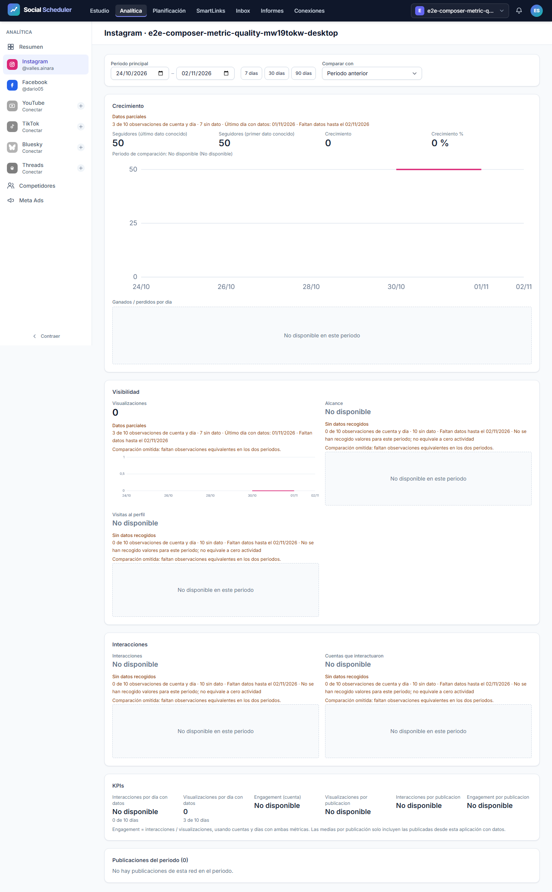
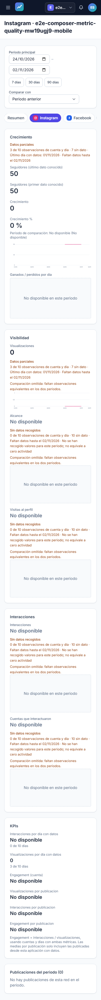
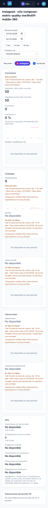
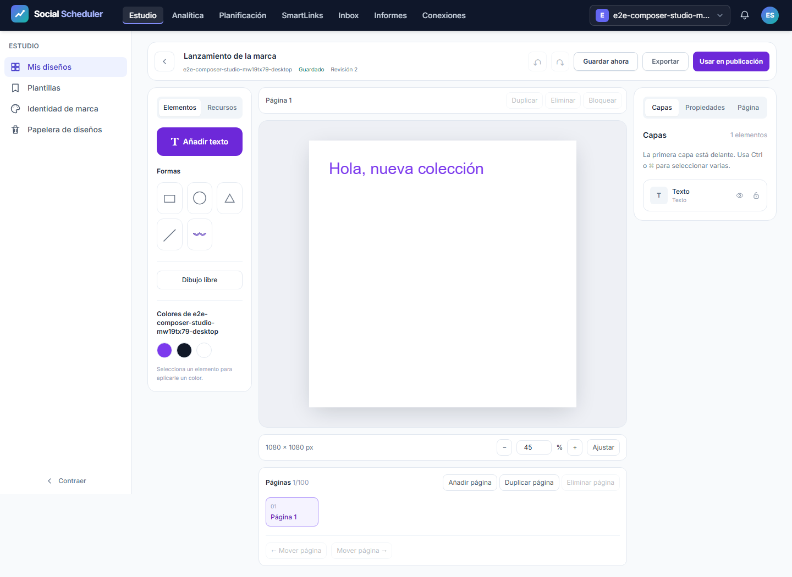
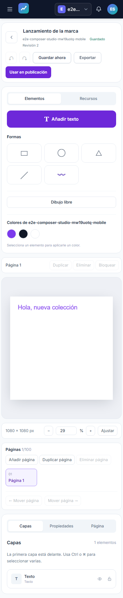
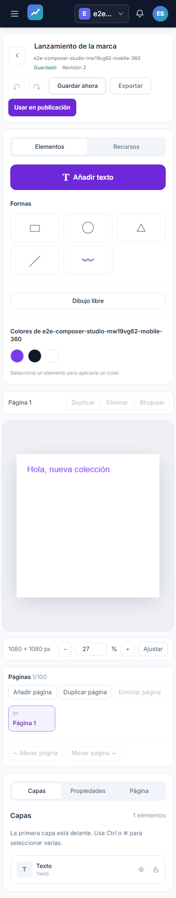

Informe de QA — bloque de fundamentos, métricas y marca
Fecha: 2026-11-03T23:42:06+01:00.
Estado del bloque: VERDE. URL auditada: http://localhost:8080. Chromium en escritorio 1440×900, móvil 375×812 y móvil 360×740.
Plan: improvement-plan.md · test-plan.md. Alcance: T-03, T-04–08 y coherencia de marca de T-21; T-09–20, gestión avanzada de Ads y constructor avanzado de informes permanecen pendientes. La iniciativa global sigue en progreso.
Veredicto determinista
{
"verdict": "VERDE",
"counts": {
"passed": 18,
"failed": 0,
"flaky": 0,
"skipped": 0,
"interrupted": 0
},
"flaky_sin_justificar": [],
"flaky_justificados": {},
"threshold": "verde ⟺ 0 failed, 0 flaky sin justificar, 0 interrumpidos y ≥1 test ejecutado"
}
Automáticos: 18/18 pasan. Fallos: 0; flaky: 0; omitidos: 0. Se ejecutaron los 18 casos canónicos, con un worker y sin reintentos automáticos.
Cobertura y entorno
ledger-lint.py: 0 incoherencias y 0 avisos. coverage-check.py: 0 referencias rotas, 0 tests sin referencia y 0 criterios GWT huérfanos. Los avisos restantes corresponden a T-01–02 (investigación/contrato, sin E2E propio) y T-09–20 (trabajo futuro declarado fuera de esta tanda). No se presenta cobertura E2E del alcance futuro. Evidencia textual completa en raw/ledger-lint.txt y raw/coverage-check.txt.
Guardrail local ejecutado antes de las pruebas, exit 0. Cada tanda dispone de SQLite, caché, sesión, almacenamiento y cuatro identidades desechables propios. El bootstrap impide llamadas HTTP externas y utiliza conectores de prueba. La publicación comprobada es un borrador; no se envió a redes. No se arrancó worker ni se accedió al VPS.
La compilación Vite y renderer pasó; conserva el aviso de tamaño de chunk >500KB. Los SHA-256 de tests y artefactos compilados figuran en raw/final-input-hashes.json. Las pruebas PHP/Node y OpenAPI pertenecen a las verificaciones del coordinador, no se contabilizan como ejecutadas por esta tanda. No hay bloques API-xx/A11Y-xx en este test-plan.
Resultados E2E
| Escenario | Dispositivo | Resultado | Duración |
|---|---|---|---|
| E2E-01 | desktop | PASA | 4.2 s |
| E2E-01 | mobile | PASA | 3.7 s |
| E2E-01 | mobile-360 | PASA | 4.0 s |
| E2E-02 | desktop | PASA | 7.6 s |
| E2E-02 | mobile | PASA | 7.5 s |
| E2E-02 | mobile-360 | PASA | 6.9 s |
| E2E-03 | desktop | PASA | 5.9 s |
| E2E-03 | mobile | PASA | 5.8 s |
| E2E-03 | mobile-360 | PASA | 5.8 s |
| E2E-04 | desktop | PASA | 5.7 s |
| E2E-04 | mobile | PASA | 5.7 s |
| E2E-04 | mobile-360 | PASA | 5.7 s |
| E2E-05 | desktop | PASA | 6.7 s |
| E2E-05 | mobile | PASA | 6.6 s |
| E2E-05 | mobile-360 | PASA | 6.6 s |
| E2E-06 | desktop | PASA | 5.6 s |
| E2E-06 | mobile | PASA | 5.3 s |
| E2E-06 | mobile-360 | PASA | 5.1 s |
E2E-01 comprueba cero real, cobertura, fecha, comparación desigual y denominador diario. E2E-02 persiste el documento, verifica PNG 1080² y el adjunto del borrador. E2E-03 verifica historial, páginas y archivos JPEG/WebP/SVG/PDF reales; PDF con dos páginas. E2E-04 conserva trabajo local ante 409 y recupera la revisión guardada. E2E-05 registra PNG/JPEG/WebP fraccionarios (41² × 0,5 → 21²). E2E-06 conserva la marca al navegar Ads → informes y al generar el informe.
Todos los casos Studio vigilan excepciones y errores de consola y comprueban overflow; únicamente se acepta el 409 deliberado del caso de revisión y su endpoint exacto. Métricas y marca también vigilan errores y overflow. No se excluyen errores de conexión.
Evidencia visual y artefactos
Las capturas de Editor y métricas se revisaron visualmente en escritorio y móvil. El editor mantiene lienzo y herramientas dentro del ancho; en móvil apila las herramientas y requiere desplazamiento vertical. Las tarjetas muestran cero, ausencia de datos y cobertura parcial de forma diferenciada. Esta inspección no certifica toda la accesibilidad.






Los archivos de exportación, las capturas de fallo y el contexto de error se conservan en raw/final/artifacts/; hashes en raw/final/sha256.json. El JSON real del reporter permanece íntegro en raw/final/results.json y se duplica en results.json. No se copian SQLite, cookies, contraseñas ni estados de sesión. Las trazas originales con cabeceras y cookies permanecen únicamente en el runner local aislado; network-failures.json conserva diagnóstico de red saneado (URL sin query, estado y error).
Primer intento y repetición
El intento 1 completó 18 casos: 9 pasan y 9 fallan, 0 flaky/omitidos. raw/attempt-1/qa-gate.json da NO-VERDE. Dos casos fallaron por etiqueta de marca; otros detectaron rechazos de conexión en precargas JS del servidor local. Se conservan el JSON original, capturas, exportaciones y diagnóstico saneado. La etiqueta explícita se corrigió antes de repetir toda la tanda; el primer intento coincidió parcialmente con una nueva compilación. No se justificó ningún flaky ni se eliminaron fallos del JSON.
El intento 2 con build estable terminó con 14/18 aprobados y 4 fallos de conexión; se conserva en raw/attempt-2/. Uno de los fallos afectó al PATCH de guardado y otro al dashboard. El coordinador aisló la conexión IPv4 rechazada mientras PHP escuchaba solo en IPv6 (../debug-loopback/before.json); al forzar IPv4 apareció además agotamiento de sockets por respuestas PHP sin keep-alive. El runner ahora usa un frontend Node privado en 127.0.0.1:8080 con conexiones persistentes y PHP en un puerto loopback efímero, y resuelve localhost de Chromium a 127.0.0.1. Se conserva el origen HTTP localhost y cada petición de aplicación sigue llegando a PHP. No se desactivó prefetch ni se filtraron errores. El diagnóstico del coordinador conservó 3/3 repeticiones y 0 errores de conexión con 6 conexiones TCP por caso (../debug-loopback/keepalive.json).
Esta tanda final ejecuta los mismos 18 casos canónicos con ese runner. QA ejecutó además los guardrails Node: 3/3 pasan, cero fallos/omitidos; incluyen aislamiento del entorno y reutilización de un socket para 20 recursos, preservando Host, cookies y POST al backend; también prueban la terminación de una respuesta si PHP corta el stream. Salida real en raw/node-guardrails.txt. La corrección afecta solo al entorno de pruebas; la compilación de la aplicación permanece estable.
El intento 3 con keep-alive ya pasó 18/18 casos, conservados en raw/attempt-3/. La revisión posterior encontró un manejo incompleto de streams PHP interrumpidos en el runner. Tras corregirlo y verificar su regresión Node, esta ejecución final repite los 18 casos completos sobre el helper definitivo; no cuenta pases de ejecuciones anteriores.
Trazabilidad
| Tarea | Escenarios | Límite |
|---|---|---|
| T-03 | E2E-01; M-01 | Recolección real del VPS pendiente |
| T-04 | E2E-02, E2E-04 | E2E del flujo integrado; ownership en pruebas de servicio aparte |
| T-05 | E2E-03 | No valida capacidades avanzadas de T-09–20 |
| T-06 | E2E-02, E2E-03, E2E-04 | Tres viewports |
| T-07 | E2E-02, E2E-03, E2E-05; M-03 | Linux/R2 pendiente |
| T-08 | E2E-02–05 | API/MCP y contratos se verifican aparte |
| T-21 | E2E-06 | Solo coherencia de marca de este bloque |
Checklist manual pendiente
- [ ] M-01 — Usuario: scheduler/worker del VPS, heartbeat y capturas recientes del periodo cerrado.
- [ ] M-02 — Usuario: publicación real por red y smokes Bluesky/Threads pendientes.
- [ ] M-03 — Desarrollo + usuario: renderer de producción con Node/Chromium/fuentes/cola media y archivo real con imagen/vídeo local y R2.
- [ ] M-04 — Usuario, aplazado: Claude Desktop.
No se solicita SSH ni se ejecutan estas verificaciones externas. El bloque local no certifica operación en producción ni paridad completa.
Se aplica el flujo de la skill to-pdf con su tema CSS: Markdown → HTML mediante League/CommonMark instalado → Chromium de Playwright instalado. Sustitución local del adaptador Puppeteer/markdown-it sin instalar dependencias; mismas capturas embebidas y contenido del informe. render-report.php y render-report.mjs permiten reproducirlo.